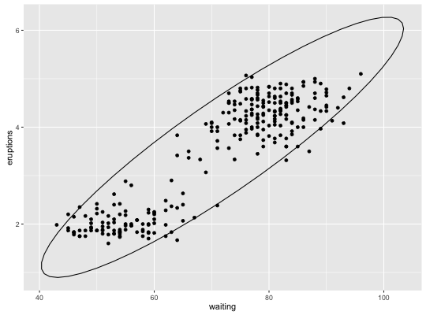
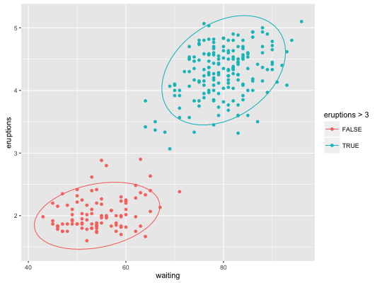
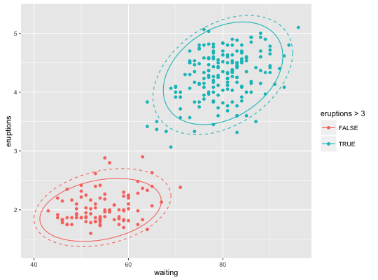
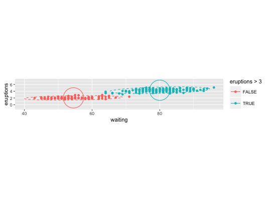
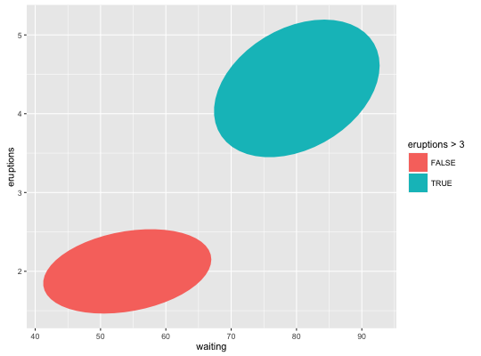

stat_ellipse(mapping = NULL, data = NULL, geom = "path", position = "identity", type = "t", level = 0.95, segments = 51, na.rm = FALSE, show.legend = NA, inherit.aes = TRUE, ...)
aes or aes_string. Only needs to be set
at the layer level if you are overriding the plot defaults."t" assumes a multivariate t-distribution, and
"norm" assumes a multivariate normal distribution.
"euclid" draws a circle with the radius equal to level,
representing the euclidean distance from the center.
This ellipse probably won't appear circular unless coord_fixed() is applied.type="euclid", the radius of the circle to be drawn.FALSE (the default), removes missing values with
a warning. If TRUE silently removes missing values.NA, the default, includes if any aesthetics are mapped.
FALSE never includes, and TRUE always includes.FALSE, overrides the default aesthetics,
rather than combining with them. This is most useful for helper functions
that define both data and aesthetics and shouldn't inherit behaviour from
the default plot specification, e.g. borders.layer. This can
include aesthetics whose values you want to set, not map. See
layer for more details.The method for calculating the ellipses has been modified from
car::ellipse (Fox and Weisberg, 2011)
John Fox and Sanford Weisberg (2011). An R Companion to Applied Regression, Second Edition. Thousand Oaks CA: Sage. URL: http://socserv.socsci.mcmaster.ca/jfox/Books/Companion
ggplot(faithful, aes(waiting, eruptions)) + geom_point() + stat_ellipse()
ggplot(faithful, aes(waiting, eruptions, color = eruptions > 3)) + geom_point() + stat_ellipse()
ggplot(faithful, aes(waiting, eruptions, color = eruptions > 3)) + geom_point() + stat_ellipse(type = "norm", linetype = 2) + stat_ellipse(type = "t")
ggplot(faithful, aes(waiting, eruptions, color = eruptions > 3)) + geom_point() + stat_ellipse(type = "norm", linetype = 2) + stat_ellipse(type = "euclid", level = 3) + coord_fixed()
ggplot(faithful, aes(waiting, eruptions, fill = eruptions > 3)) + stat_ellipse(geom = "polygon")